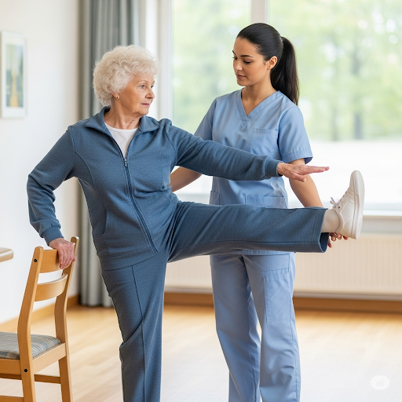

ท่ายืนกางขา
การออกกำลังกายท่านี้นอกจากเพิ่มความแข็งแรงของกล้ามเนื้อสะโพกแล้วยังฝึกเรื่องการทรงตัวไปด้วย
เริ่มแรกที่ฝึกอาจต้องยืนจับเก้าอี้ หรือราวจับที่มั่นคงก่อน
1.ยืนแยกขาสองข้างความกว้างระดับไหล่ ใส่น้ำหนักหรือยางยืดที่ขาหรือข้อเท้า มือซ้ายจับเก้าอี้ที่มั่นคงและมีน้ำหนัก
2.ถ่ายน้ำหนักไปขาซ้าย จากนั้นกางขาข้างขวาไปด้านข้าง โดยให้เข่าเหยียดตรง ยกขาสูงจากพื้นเท่าที่ไหว จากนั้นวางเท้ากลับมาที่พื้น ทำซ้ำ 8-10 ครั้ง
3.จากนั้นเปลี่ยนมือมาจับเก้าอี้ด้วยข้างขวา ยืนทรงตัวด้วยขาขวา แล้วกางขาซ้ายออกทางด้านข้าง 8-10 ครั้ง ให้ทำท่าเดิมซ้ำ 2 รอบต่อข้าง ถ้าทำไหว